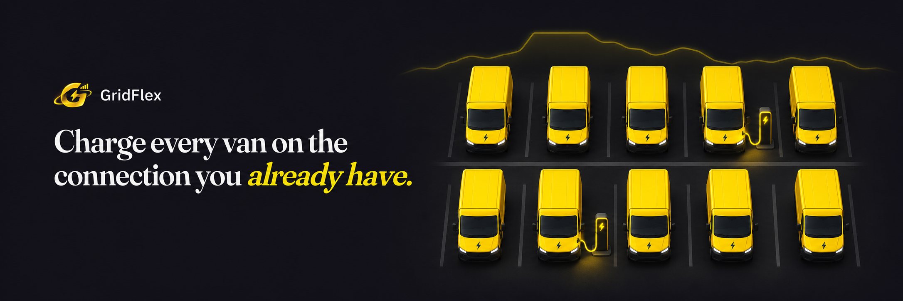

Locate
Look up local grid congestion by postcode. Enter the depot’s connection limit separately.
GridFlex · Plan. Stress-test. Explain.
GridFlex plans EV fleet charging inside the capacity your site already has, tests that plan on realistic days it has never seen, and explains the result in plain language. A person decides.
01 · The problem
In a congested part of the Dutch grid, a depot may have to wait for more capacity. Its building, equipment and EV chargers still share the same connection today.
Ten vans charging at 11 kW each draw 110 kW before the building uses anything. On a 100 kW connection, plugging them all in at once already exceeds the limit.
The question is how much energy the fleet needs by departure. If some vans can wait, the depot can spread charging across quieter hours.
02 · The idea
GridFlex treats fleet charging as a timetable. It works out how to share the site’s available power between vehicles that have different deadlines, then checks where that timetable could fail.
Look up local grid congestion by postcode. Enter the depot’s connection limit separately.
Use building demand and each van’s departure time to propose a charging schedule.
Replay that fixed schedule against demand the planner did not use.
Show the evidence behind the verdict so an operator can decide what to change.
03 · Set up the depot
The postcode describes the local grid. The site’s actual connection limit is the number the scheduler uses. If the depot has confirmed extra capacity during certain hours, enter that as a separate allowance.
Upload quarter-hour meter readings when available. Otherwise, GridFlex estimates the daily shape from synthetic GLASS profiles for the sector and month, and scales it to the electricity bill.
Set each van’s arrival, departure, energy needed in kWh and charging power in kW. A setup CSV can fill in the site and fleet details.
Enter its storage capacity in kWh and its charge and discharge power in kW. That lets the planner test whether stored energy can help at busy times.
The capacity map gives a dated view of local congestion and queues. For supported sectors, Liander reference profiles let you compare the shape of the GLASS estimate with measured demand.
04 · Make a schedule
The OR-Tools solver divides the planning window into 15-minute slots. It allocates power only while a van is parked and respects the charger rating, the site limit and any battery constraints.
It first reduces unavoidable overload, then unmet energy, then peak demand and battery cycling. When the site cannot supply enough energy, the schedule shows which vans will be short and by how much.
The demand chart compares the planned grid draw with charging on arrival. The van heatmap shows exactly which slots each vehicle gets.
05 · Stress-test
GridFlex separates planning and test data by customer for GLASS or by date for meter readings. It keeps the charging timetable fixed and replays it against those unseen building loads.
A test window counts as a breach if even one quarter hour goes above the connection limit.
Worst overshoot shows the largest excess in kW. Unmet energy shows how many kWh the vans still need at departure.
The breach-timing chart shows when the limit is exceeded most often. That can differ from the time of the largest spike.
These results describe the selected test windows. A run with zero observed breaches can still face different conditions at a real depot.
06 · Explain and decide
The solver calculates the plan and the replay measures it. The explanation assistant uses those computed facts to answer questions such as “Which vans are short?” or “When did we go over the limit?”
The fleet receives its requested charge and the test-window breach rate stays within your tolerance.
The fleet receives its charge, but too many test windows breach the limit.
At least one van leaves short. Compare what happens with later departures, extra capacity or a different battery setting.
A person reviews the evidence and chooses what to do. GridFlex recommends a plan, and the depot confirms capacity with its grid operator before acting.
07 · Worked example
This synthetic example uses 14 vans, a 60 kW connection and a sample meter file. The first run leaves vans short. The second asks whether an on-site battery changes the result.
Does not fit. The schedule leaves 21 kWh unmet. About 71% of the held-out windows exceed the connection limit.
Fits in this example. The re-run meets the fleet's energy request, with no breaches in the selected test windows.
08 · Multi-depot planning
A fleet manager may have room to electrify one depot while another runs out of capacity. Upload a portfolio CSV to model each depot with its own fleet, building demand and connection limit.
Compare verdicts, open an individual timetable, and export a PDF. The five-depot example includes all three verdicts. The larger synthetic stress test contains 649 depots and 25,929 vans.
For portfolio questions, the backend retrieves the relevant depot results or calculates a ranking from the saved run. The assistant can explain those results using Groq or local Qwen.
Explore the example portfolios09 · Watch
See the grid constraint, the charging problem and how GridFlex helps a depot plan around both.
Watch the video
10 · Try GridFlex
Start with a single depot or try a portfolio CSV. Use the synthetic examples to explore the dashboard, or bring meter readings to model your own building demand.